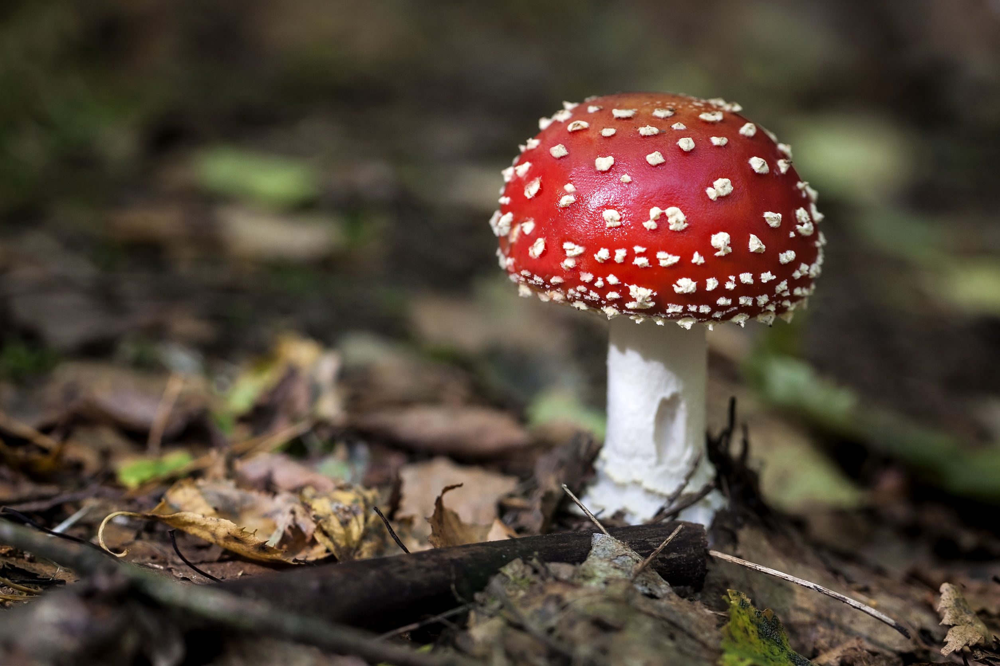
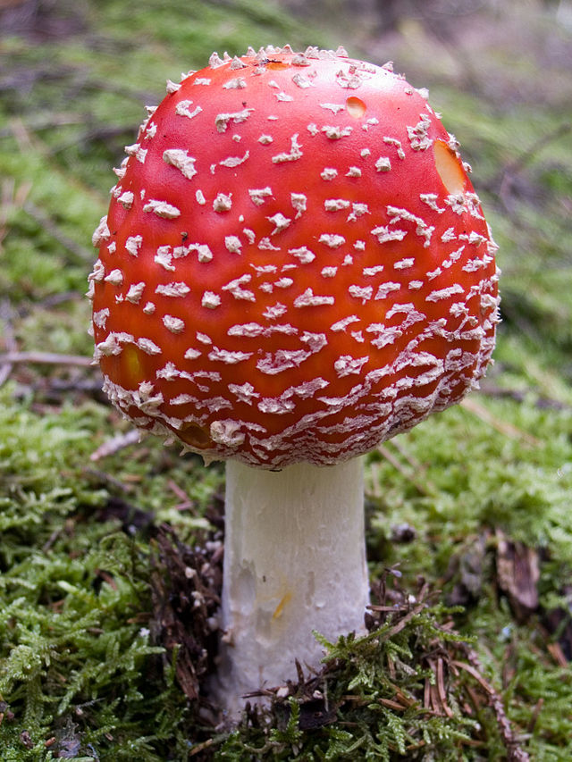

Мухомор (Amanita muscaria) — це яскраво-червоний гриб, який легко впізнати завдяки його характерній біло-червоній шапочці.
Він росте в лісах по всьому світу, переважно в північних регіонах,
і має давню історію використання в культурних та ритуальних практиках.
Хоча він відомий своєю яскравістю, мухомор є небезпечним через свої токсичні властивості.
Мухомор містить токсичні речовини, такі як мускарин та іботенова кислота, які можуть викликати важкі отруєння при вживанні.
Симптоми включають нудоту, галюцинації, судоми та, у важких випадках, навіть смерть.
Через ці небезпечні властивості гриб вважається отруйним і не рекомендується до вживання у їжу.

Незважаючи на свою токсичність, мухомор також має певні лікувальні властивості.
У малих дозах екстракти з мухомора використовуються в народній медицині для лікування болю у суглобах,
нервових розладів і навіть при проблемах зі шкірою.
Проте медичне використання мухомора повинно проводитися тільки під суворим контролем фахівців.